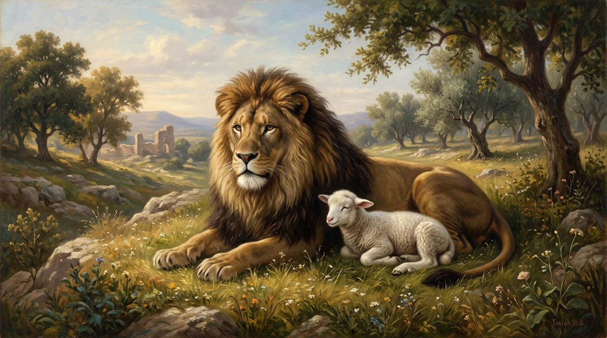

A Linguagem Visual de Deus
A Bíblia foi escrita em uma cultura oriental, que adora se comunicar através de imagens, metáforas e símbolos. Deus frequentemente usa elementos físicos e cotidianos do mundo natural para explicar verdades espirituais profundas. Compreender esses símbolos destrava o significado de profecias, parábolas e visões.
Neste estudo:
🐑 Animais Simbólicos

Os animais carregam significados poderosos nas Escrituras. O Cordeiro representa mansidão e sacrifício puro (Jesus é o Cordeiro de Deus). O Leão simboliza poder, majestade e realeza (Jesus também é o Leão da tribo de Judá). A Pomba representa pureza, paz e a presença sensível do Espírito Santo.
🌿 Natureza e Agricultura
A vida agrária de Israel forneceu muitos símbolos. A Oliveira, que produz o azeite, simboliza a unção, o Espírito Santo e a nação de Israel. A Videira (pé de uva) representa a comunhão e a frutificação (Cristo é a videira, nós somos os ramos). O Trigo e o Joio contrastam os verdadeiros filhos de Deus com os falsos.
🔥 Elementos Físicos: Fogo, Água e Luz
O Fogo geralmente representa a presença santa de Deus (como na sarça ardente), purificação ou juízo. A Água pode simbolizar limpeza, a Palavra de Deus ou a vida abundante do Espírito Santo (a "água viva"). A Luz é a verdade, a revelação e a presença divina dissipando as trevas morais e espirituais.
🩸 O Sangue
Na Bíblia, "a vida da carne está no sangue" (Levítico 17:11). Portanto, o sangue derramado nunca é visto como algo nojento, mas como o preço máximo pago pela redenção. Ele simboliza a expiação (cobertura) dos pecados e a assinatura de uma Aliança definitiva entre Deus e os homens, consumada na cruz.
🔢 A Matemática de Deus (Números)
Muitos números na Bíblia não são apenas quantidades, mas conceitos. O 7 aponta para perfeição, totalidade e conclusão (os sete dias da criação). O 40 representa um período de provação e teste (os 40 anos no deserto, os 40 dias de Jesus jejuando). O 12 simboliza o governo divino e a autoridade (12 tribos, 12 apóstolos).
✅ Resumo
A simbologia bíblica não é um código secreto para a elite, mas um recurso pedagógico de Deus. Ao estudar os símbolos, percebemos a harmonia e a poesia que costuram a Bíblia de Gênesis a Apocalipse, revelando o Evangelho até nos menores detalhes da criação.
🎥 Aprofunde seu estudo
Deseja conhecer mais sobre os símbolos e metáforas nas Escrituras?
Assista a estudos em vídeo recomendados.
Continue sua jornada:
- Próximo Tema ➡️ Alianças Bíblicas
- Temas 📚 Ver todos os estudos
Apoie este projeto 🌱
Se este estudo foi útil, considere apoiar a manutenção do site.
Chave PIX (Celular):
marcosmontanari2@gmail.com